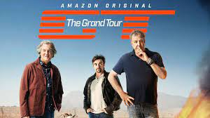

Top Gear is a British motoring magazine and factual television programme, designed as a relaunched version of the original 1977 show of the same name by Jeremy Clarkson and Andy Wilman for the BBC, and premiered on 20 October 2002. The programme focuses on the examination and reviewing of motor vehicles, primarily cars, though this was expanded upon after the broadcast of its earlier series to incorporate films featuring:
All specially-designed for the relaunched programme. The programme drew acclaim for its visual and presentation style since its launch, which focused on being entertaining to viewers, as well as criticism over the controversial nature of its content. The programme was aired on BBC Two until it was moved to BBC One for its twenty-ninth series in 2020.
 The Grand Tour is a British motoring television series, created by Jeremy Clarkson, Richard Hammond, James May, and Andy Wilman, made for Amazon exclusively for its online streaming service Amazon Prime Video, and premiered on 18 November 2016. The programme was conceived in the wake of the departure of Clarkson, Hammond, May and Wilman from the BBC series Top Gear, and originally contracted with 36 episodes over three years.